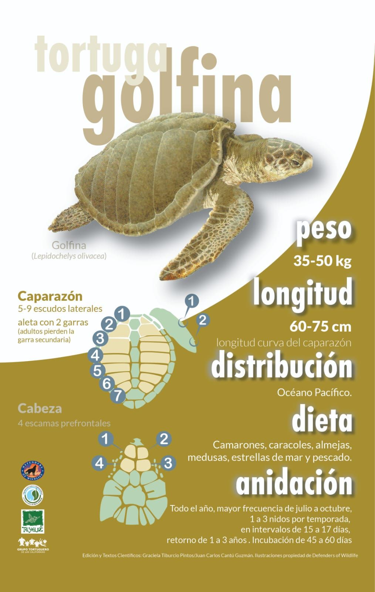
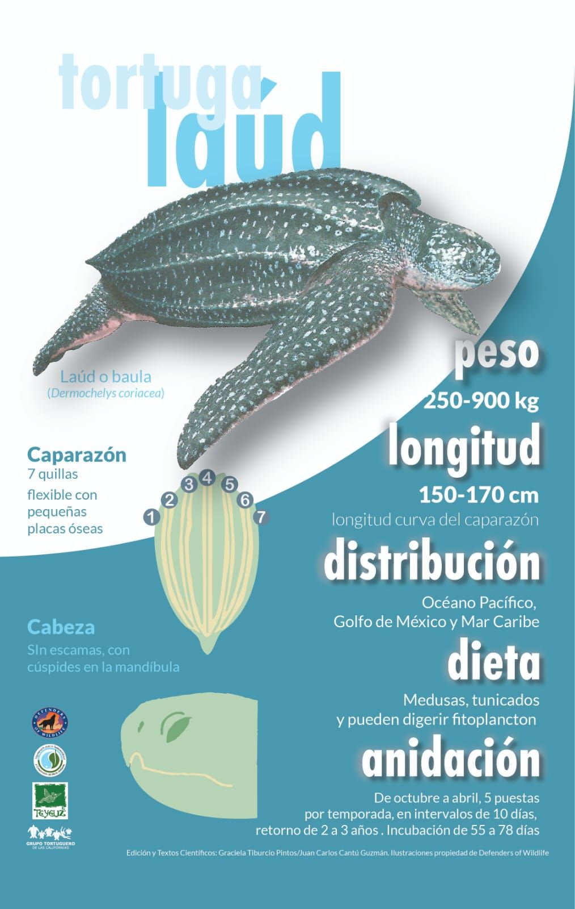

Quiénes somos
Chelonia Maris… (TEXTO ORIGINAL NO MODIFICADO)
Qué hacemos
- Monitoreo de nidos…
- Liberación segura…
- Educación ambiental.
- Monitoreos en agua.
Galería


Especies marinas de Baja California Sur
En nuestras costas…




Donaciones
CLABE: 072040010551997187
Banco: Banorte
Nombre: Gonzalo Pastrana Jiménez
Contacto
📍 La Ventana, Baja California Sur
📱 612 107 0041
📞 612 108 7495
🌐 Facebook: Chelonia Maris GT – La Ventana